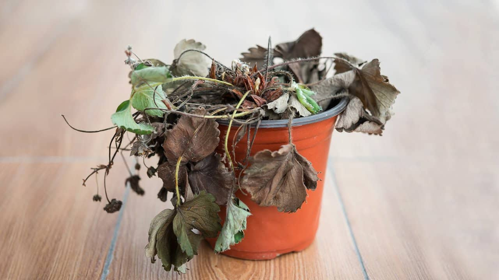

🌱 Como cuidar da sua planta?
Cuidar de uma planta é observar o que ela precisa e ajudar a mantê-la saudável todos os dias.

🪴 O que você faria?
Escolha uma situação e descubra qual cuidado pode ajudar sua planta.
💚 Alguns cuidados importantes
Cada planta tem suas próprias necessidades, mas alguns cuidados são importantes para muitas delas.
Observe a água
Antes de regar, observe a umidade do solo. Evite colocar água sem necessidade.
Observe a luz
Descubra quanta luz sua planta precisa e escolha um lugar adequado para ela.
Observe as folhas
Folhas podem mostrar sinais de que a planta precisa de algum cuidado.
Cuide do solo
O solo ajuda a sustentar a planta e fornece água e nutrientes para suas raízes.
👀 Fique de olho na sua planta!
Observar a planta ajuda a perceber quando alguma coisa pode não estar indo bem.
Folhas secas
Podem ser um sinal de que a planta está recebendo pouca água ou excesso de Sol.
Folhas amareladas
Podem indicar que a planta estão sendo regadas em excesso, falta de nutrientes ou pouca luz.
Solo encharcado
O excesso de água também pode prejudicar algumas plantas. Não regue até conferir a umidade novamente.
E o Meu PlantAmigo?
O Meu PlantAmigo ajuda você a acompanhar a umidade do solo e pode realizar a irrigação quando a planta precisa de água.
💡 Você sabia?
Cuidar de uma planta não significa apenas regá-la. Observar a luz, o solo e as folhas também faz parte de cuidar bem dela!
🌱 Agora você já sabe como cuidar melhor da sua planta!
Que tal testar seus conhecimentos sobre os cuidados com as plantas?
Fazer o quiz